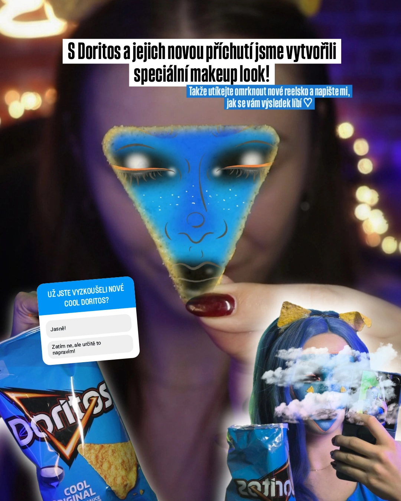
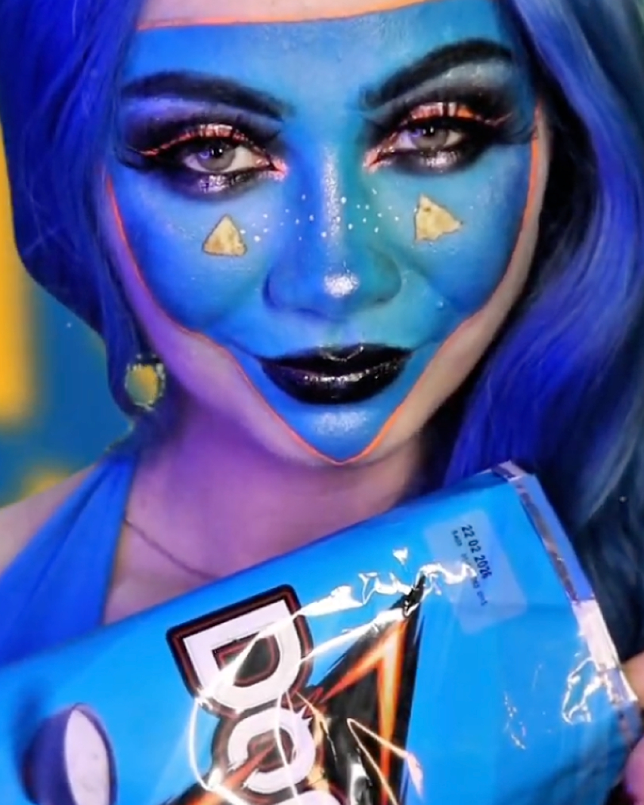
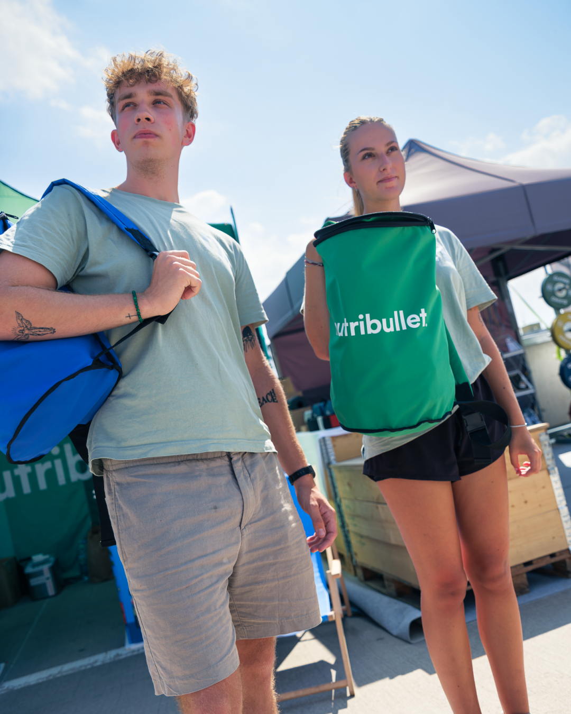
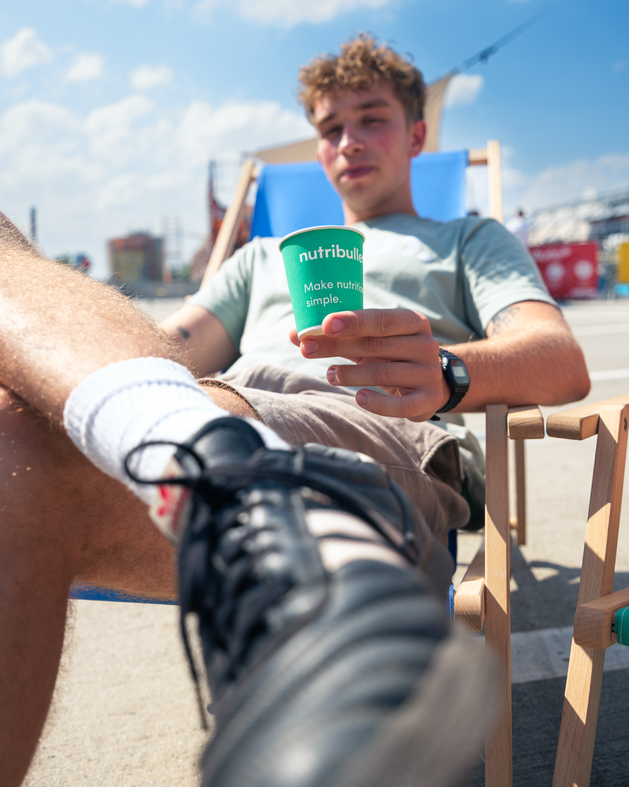
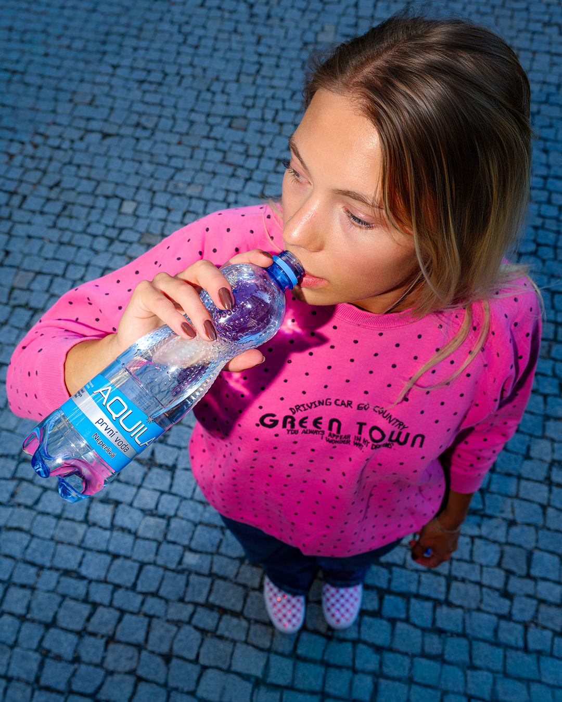
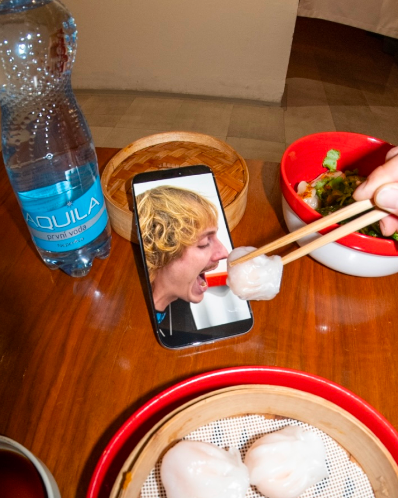
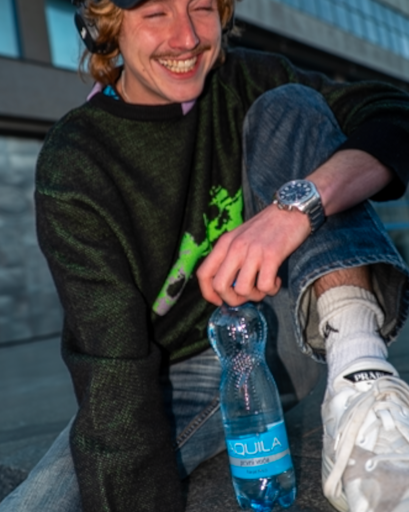
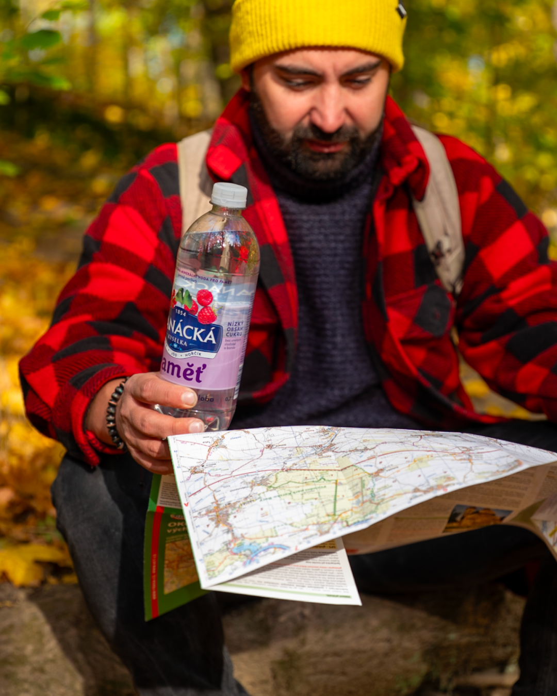
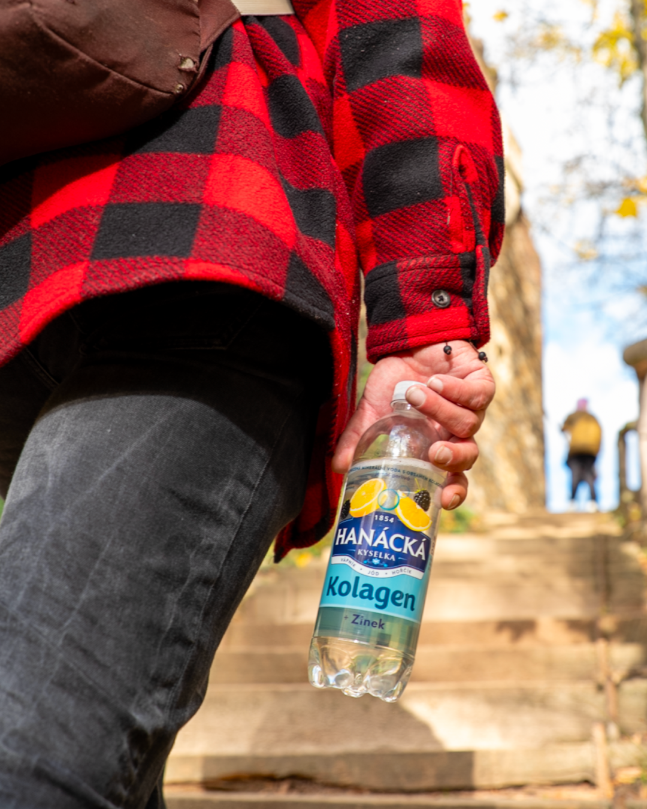

Doritos – special makeup look
Grafický post k nové příchuti, kombinace make-upu a brand prvků.
#doritos #content #reels

Doritos – vertikální video vizuál
Detailní beauty stylizace pro rychlý social výstup.
#beauty #snacks #social

Nutribullet – eventový obsah
Lifestyle fotka z akce, produkt v ruce, letní vibe.
#nutribullet #event #photo

Nutribullet – brand přítomnost
Dvojice s brandovanými taškami, jasná identifikace značky.
#brand #outdoor #photo

Aquila – city lifestyle
Vertikální záběr shora, barevně sladěný s lahví.
#aquila #lifestyle #vertical

Aquila – chill portrét
Uvolněný portrét s produktem, street prostředí.
#aquila #portrait #socialcontent

Aquila – social & food
Food scéna s mobilem a produktem, vhodné do stories.
#food #aquila #stories

Hanácká – Paměť na cestách
Podzimní scéna s mapou, funkční voda v záběru.
#hanacka #functional #outdoor

Hanácká – Kolagen v pohybu
Lifestyle během výletu, produkt v ruce, jasné podzimní barvy.
#hanacka #kolagen #lifestyle
Aquila – kreativní portrét
Hudební scéna s produktem, funguje na reels i foto.
#aquila #portrait #reels